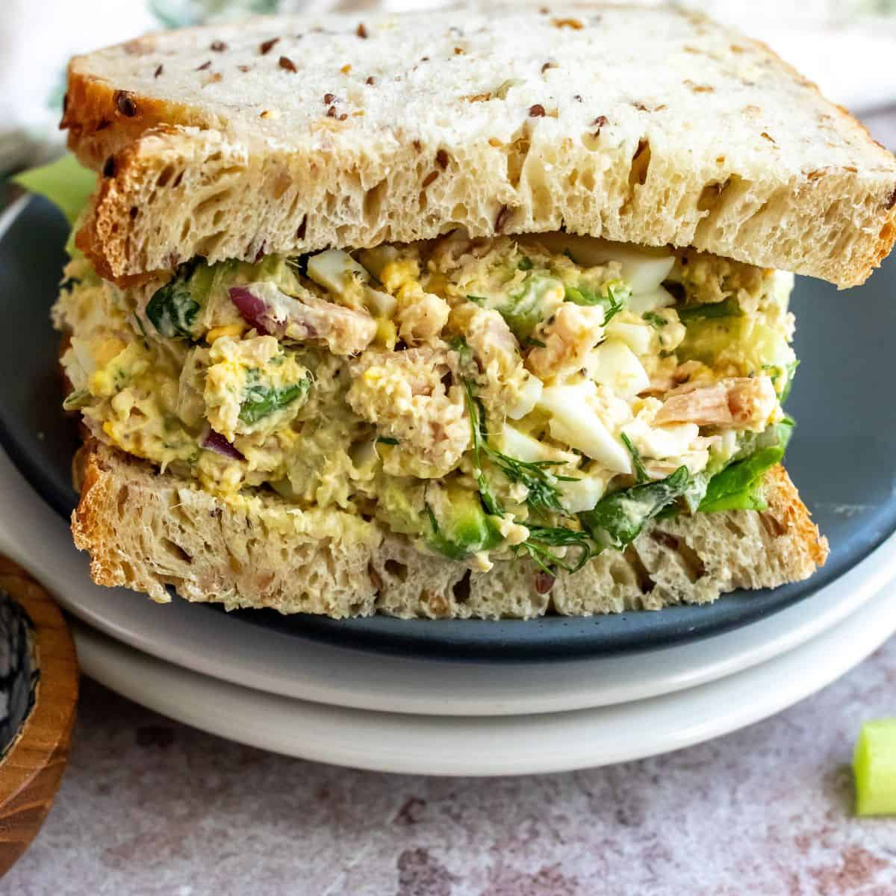

Tuna Egg

Description
This tuna salad with egg is simple and quick to make into a hearty sandwich. My grandparents make these and tell me that this is the correct way to make a sandwich!
Ingredients
- 3 hard-cooked eggs, peeled and chopped
- 1 (5 ounce) can tuna, drained
- 1 cup chopped celery
- 1 tablespoon mayonnaise
- salt and pepper to taste
- 4 slices whole wheat bread
Steps
- Combine eggs, tuna, celery, and mayonnaise in a medium bowl. Season with salt and pepper to taste.
- Divide tuna mixture evenly onto two slices of bread; top with remaining slices of bread.
Home